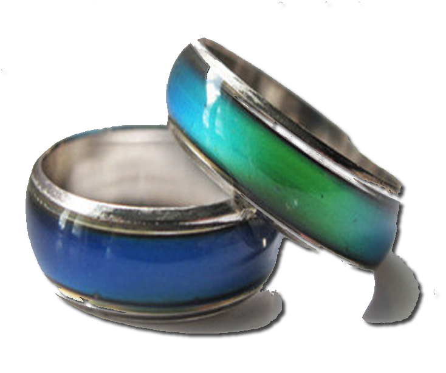

Just for fun, take this funky little quiz that determines your mood. There isn't any scientific basis to the questions. The goal is for you to snicker a little, laugh a little, or wonder "what the heck were they thinking?", as you answer the wacky questions. Add a little levity to your day by taking the Mood Ring Quiz. Please provide a response to each question. When you are done, Click Submit and watch the colors change. “Colour communicates critical information about the world; it is a source of stimulation and pleasure; it shapes and activates space; and it holds psychological and cultural association that facilitate communication.”
Jim Lon The New Munsell Student Color Set(Fourth Edition, 2016)
Ring Colors
Dark-Green
Green
Periodot-Green
Yellow
Orange
Red
Magenta
Purple
Indigo Blue
Blue
Skyblue
Black
